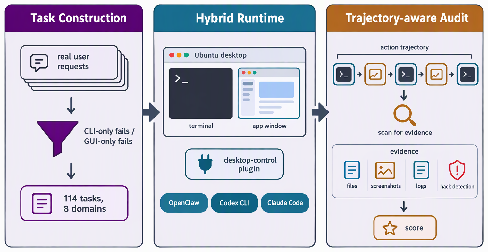

三、课题研究内容
□ 研究一（续）：WeaveBench —— 混合能力范式的轨迹感知可信评测
评测
GUI
CLI
■ 问题：现有基准将 CLI 与 GUI 割裂评测，任务可在单一能力内完成；仅依据最终结果判分，难以度量能力协同
■ 解决方法：以已部署的 CLI 智能体运行时为底座、加入轻量桌面控制插件；只收录仅用任一通道无法完成的长程任务；轨迹感知判官审计全过程

WeaveBench（EMNLP 2026）：任务构造（仅用任一通道无法完成）→ 混合运行时 → 轨迹感知审计（示意图）
通道消融：同一设置下成功率（%）
1.8
仅 GUI
3.5
仅 CLI
35.1
混合
41.2%
最佳模型–运行时组合（OSWorld 成绩仅作背景参考）
10–20 pp
4 个模型上仅结果判分高于审计口径
结论：失败中违规取巧与长程失控占 65.6%，提示自主编排与自我验证是优先改进方向 → 研究二针对其开展训练